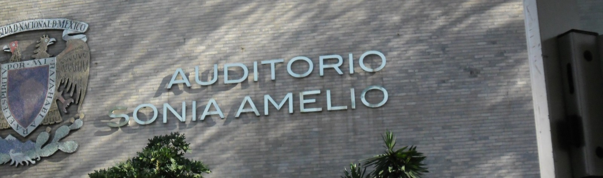
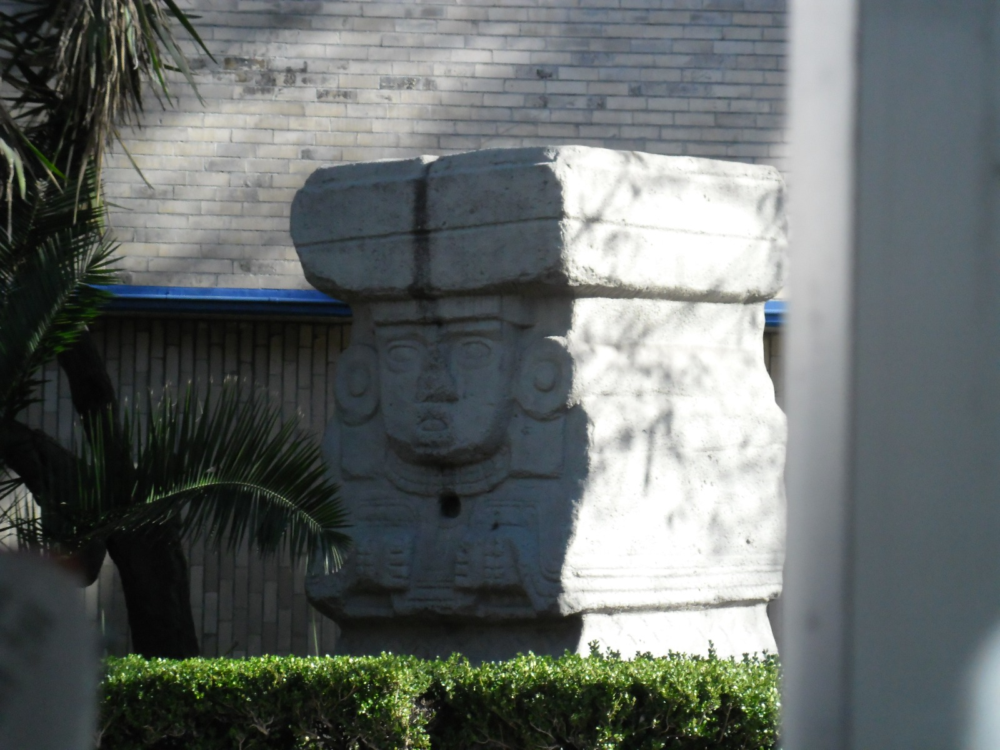
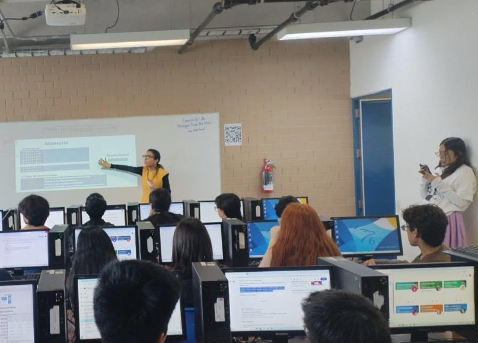
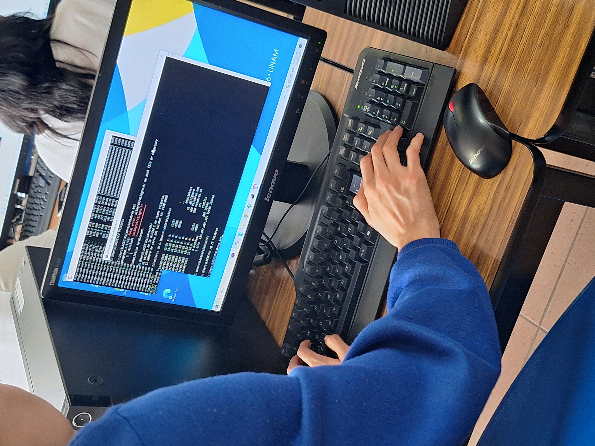

Sistema de apoyo a estudiantes del ETEC

¿Cómo acceder al sistema?
Si eres alumno: tu profesor/a se encargará de realizar el registro correspondiente para permitirte el acceso al sistema. Únicamente deberás ingresar tu número de cuenta como usuario y "(número de cuenta)P6*" (sin comillas) como contraseña.
Si eres profesor: no sé q poner aquí jej
Acceder

¿Qué son los ETE?
Los Estudios Técnicos Especializados (ETE) son programas impartidos en los nueve planteles de la Escuela Nacional Preparatoria que buscan brindar a sus alumnos conocimientos básicos en estudios superiores. Éstos tienen como propósitos generales: la inserción del estudiantado en el mundo laboral, el desarrollo de habilidades duras y blandas y el entendimiento de temas en diferentes áreas del conocimiento.
Saber más
Acerca de (nombre)
(Nombre) es un sistema dirigido a alumnos y profesores del primer año del ETE en computación, tiene como objetivo principal reducir los índices de deserción en el estudiantado. Cuenta con materiales de utilidad para los alumnos, como planes y estrategias de estudio; así como con herramientas pensadas para dar seguimiento constante a su trayectoria académica y personal, facilitando así a los docentes la toma de decisiones y la creación de estrategias pedagógicas relacionadas con el estudio técnico.

- Agencia de Viajes y Hotelería •
- Auxiliar Bancario •
- Computación •
- Contabilidad •
- Dibujo Arquitectónico •
- Enseñanza de Inglés •
- Fotógrafo, Laboratista y Prensa •
- Histopatología •
- Auxiliar Laboratorista Químico •
- Museógrafo Restaurador •
- Auxiliar Nutriólogo •